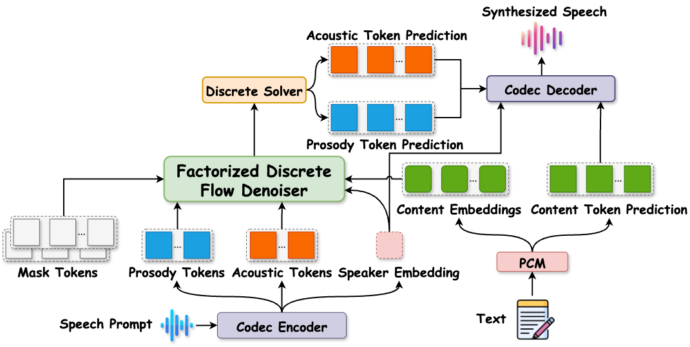
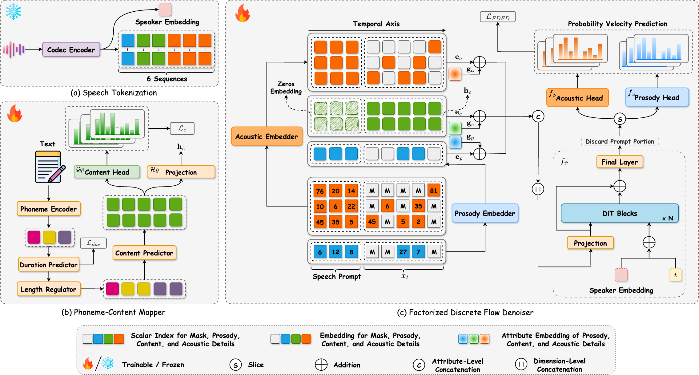

DiFlow-TTS:
Discrete Flow Matching with Factorized Speech Tokens
for Low-Latency Zero-Shot Text-To-Speech
Abstract. Zero-shot Text-to-Speech (TTS) aims to synthesize high-quality speech that mimics the voice of an unseen speaker using only a short reference sample, requiring not only speaker adaptation but also accurate modeling of prosodic attributes. Recent approaches based on language models, diffusion, and flow matching have shown promising results in zero-shot TTS, but still suffer from slow inference and repetition artifacts. Discrete codec representations have been widely adopted for speech synthesis, and recent works have begun to explore diffusion models in purely discrete settings, suggesting the potential of discrete generative modeling for speech synthesis. However, existing flow-matching methods typically embed these discrete tokens into a continuous space and apply continuous flow matching, which may not fully leverage the advantages of discrete representations. To address these challenges, we introduce DiFlow-TTS, which, to the best of our knowledge, is the first model to explore purely Discrete Flow Matching for speech synthesis. DiFlow-TTS explicitly models factorized speech attributes within a compact and unified architecture. It leverages in-context learning by conditioning on textual content, along with prosodic and acoustic attributes extracted from a reference speech, enabling effective attribute cloning in a zero-shot setting. In addition, the model employs a factorized flow prediction mechanism with distinct heads for prosody and acoustic details, allowing it to learn aspect-specific distributions. Experimental results demonstrate that DiFlow-TTS achieves promising performance in several key metrics, including naturalness, prosody, preservation of speaker style, and energy control. It also maintains a compact model size and achieves low-latency inference, generating speech up to 25.8 times faster than the latest existing baselines.
Contents
All audio samples presented on this demo page were generated by DiFlow-TTS (NFE=128), trained on 470 hours of the LibriTTS dataset.Model Overview

Figure 1. Overview of DiLow-TTS. The model decomposes the speech prompt into timbre, prosody, and acoustic tokens using a codec encoder. Input text is processed by PCM to generate content tokens and embeddings. The Factorized Discrete Flow Denoiser generates prosody, and acoustic tokens conditioned the content embeddings, speaker embedding, and the discrete prosody and acoustic tokens derived from speech prompt. A codec decoder reconstructs the final waveform.
Detailed Model

Figure 2. The detailed components of DiFlow TTS. The architecture consists of three main components: (a) Speech Tokenization, which extracts discrete tokens and a speaker embedding from a raw speech; (b) Phoneme-Content Mapper, which maps input phonemes to discrete content tokens and generates the corresponding content embeddings; and (c) Factorized Discrete Flow Denoiser, which performs discrete flow matching conditioned on the content embeddings, speaker embedding, and the discrete prosody and acoustic tokens derived from the reference speech prompt.
Zero-shot TTS (Celebrities)
DiFlow-TTS is capable of mimicking celebrity voices. The following examples are provided strictly for research purposes.
| Celebrity | Target Transcript | Prompt | DiFlow-TTS |
|---|---|---|---|
| Donald Trump | But to those who knew her well, it was a symbol of her unwavering determination and spirit. | From Spark-TTS's Demo |
|
| Optimus Prime | I don't really care what you call me. I've been a silent spectator, watching species evolve, empires rise and fall. But always remember, I am mighty and enduring. Respect me and I'll nurture you; ignore me and you shall face the consequences. | From DiTTo-TTS's Demo |
|
| Benedict Cumberbatch | The best love is the kind that awakens the soul and makes us reach for more, that plants a fire in our hearts and brings peace to our minds. And that's what you've given me. That's what I'd hoped to give you forever. | From DiTTo-TTS's Demo |
|
| Mark Zuckerberg | It is our choices that show what we truly are, far more than our abilities. | From DiTTo-TTS's Demo |
Zero-shot TTS (LibriSpeech)
All speakers are unseen during training. The audio samples are taken from the LibriSpeech test-clean dataset, using audio prompt lengths of 1s, 3s, and 5s.
| Prompt Duration | Target Transcript | Prompt | DiFlow-TTS | Spark-TTS | VoiceCraft | NaturalSpeech 2 | VALL-E | F5-TTS | OZSpeech |
|---|---|---|---|---|---|---|---|---|---|
| 1 second | therefore her majesty paid no attention to anyone and no one paid any attention to her. | ||||||||
| he often stopped to examine the trees nor did he cross a rivulet without attentively considering the quantity the velocity and the color of its waters. | |||||||||
| as used in the speech of everyday life the word carries an undertone of deprecation. | |||||||||
| i stood with my back to the wall for i wanted no sword reaching out of the dark for me. | |||||||||
| i wanted nothing more than to see my country again my friends my modest quarters by the botanical gardens my dearly beloved collections. | |||||||||
| 3 seconds | as soon as these dispositions were made the scout turned to david and gave him his parting instructions. | ||||||||
| in both these high mythical subjects the surrounding nature though suffering is still dignified and beautiful. | |||||||||
| the meter continued in general service during eighteen ninety nine and probably up to the close of the century. | |||||||||
| that is the best way to decide for the spear will always point somewhere and one thing is as good as another. | |||||||||
| there came upon me a sudden shock when i heard these words which exceeded anything which i had yet felt. | |||||||||
| 5 seconds | after proceeding a few miles the progress of hawkeye who led the advance became more deliberate and watchful. | ||||||||
| he had preconceived ideas about everything and his idea about americans was that they should be engineers or mechanics. | |||||||||
| as used in the speech of everyday life the word carries an undertone of deprecation. | |||||||||
| so no tales got out to the neighbors besides it was a lonely place and by good luck no one came that way. | |||||||||
| as soon as these dispositions were made the scout turned to david and gave him his parting instructions. |
Emotion
DiFlow-TTS can mimic the emotion from the reference speech prompt.
| Emotion | Target Transcript | Prompt | DiFlow-TTS |
|---|---|---|---|
| Angry | You said you'd always be there, but now I'm standing here alone! | ||
| Disgust | |||
| Happy | |||
| Sad | |||
| Calm |